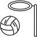

<mat-toolbar style="background-color: turquoise;">
  <mat-toolbar-row>
    <button mat-icon-button (click)="sidenav.toggle()" matTooltip="Menu">
      <mat-icon>menu</mat-icon>
    </button>

    <p>Kryptonite Netball Team Management App</p  >
    &nbsp;
    &nbsp;
    <span>
      
      <!-- <mat-icon class="material-icons-outlined">sports_volleyball</mat-icon> -->
    </span>
    <span class="example-spacer"></span>
    <button mat-icon-button class="example-icon" matTooltip="Login" routerLink="/login">
      <mat-icon>login</mat-icon>
    </button>
    <a href="https://www.facebook.com/groups/271486002972/" target="_blank">
      <button mat-icon-button class="example-icon" matTooltip="Link to Facebook" >
        <mat-icon>facebook</mat-icon>
      </button>
    </a>
    <button mat-icon-button class="example-icon" matTooltip="Search the webpage">
      <mat-icon>search</mat-icon>
    </button>
  </mat-toolbar-row>
</mat-toolbar>

<mat-sidenav-container class="example-container">
  <mat-sidenav #sidenav mode="side" opened style="background-color: lightgray;">
    <mat-nav-list>
      <mat-list-item matTooltip="Home">
        <button mat-icon-button routerLink="['/']">
          <mat-icon>home</mat-icon>
        </button>
      </mat-list-item>
      <mat-list-item matTooltip="Notifications">
        <button mat-icon-button (click)="checkLoggedIn('notifications')">
          <mat-icon>notifications</mat-icon>
        </button>
      </mat-list-item>
      <mat-list-item matTooltip="Calendar">
        <button mat-icon-button (click)="checkLoggedIn('calendar')">
          <mat-icon>calendar_today</mat-icon>
        </button>
      </mat-list-item>
      <mat-list-item matTooltip="Members">
        <button mat-icon-button (click)="checkLoggedIn('members')">
          <mat-icon>people</mat-icon>
        </button>
      </mat-list-item>
      <mat-list-item matTooltip="Attendance">
        <button mat-icon-button (click)="checkLoggedIn('attendance')">
          <mat-icon>assignment_turned_in</mat-icon>
        </button>
      </mat-list-item>
      <mat-list-item matTooltip="Messaging">
        <button mat-icon-button (click)="checkLoggedIn('messaging')">
          <mat-icon>email</mat-icon>
        </button>
      </mat-list-item>
      <mat-list-item matTooltip="Compeitions & Friendlies">
        <button mat-icon-button (click)="checkLoggedIn('games')">
          <mat-icon>sports_volleyball</mat-icon>
        </button>
      </mat-list-item>
      <mat-list-item matTooltip="Fitness">
        <button mat-icon-button (click)="checkLoggedIn('fitness')">
          <mat-icon>fitness_center</mat-icon>
        </button>
      </mat-list-item>
      <mat-list-item matTooltip="Achievements">
        <button mat-icon-button (click)="checkLoggedIn('achievements')">
          <mat-icon>emoji_events</mat-icon>
        </button>
      </mat-list-item>
      <mat-list-item matTooltip="Team funds">
        <button mat-icon-button (click)="checkLoggedIn('funds')">
          <mat-icon>paid</mat-icon>
        </button>
      </mat-list-item>
      <mat-list-item matTooltip="Useful links">
        <button mat-icon-button (click)="checkLoggedIn('links')">
          <mat-icon>link</mat-icon>
        </button>
      </mat-list-item>
      <mat-list-item matTooltip="Settings">
        <button mat-icon-button (click)="checkLoggedIn('settings')">
          <mat-icon>settings</mat-icon>
        </button>
      </mat-list-item>
      <mat-list-item matTooltip="Profile">
        <button mat-icon-button (click)="checkLoggedIn('profile')">
          <mat-icon>person</mat-icon>
        </button>
      </mat-list-item>
    </mat-nav-list>
  </mat-sidenav>
  <mat-sidenav-content class="content">
    <router-outlet> </router-outlet>
  </mat-sidenav-content>
</mat-sidenav-container>